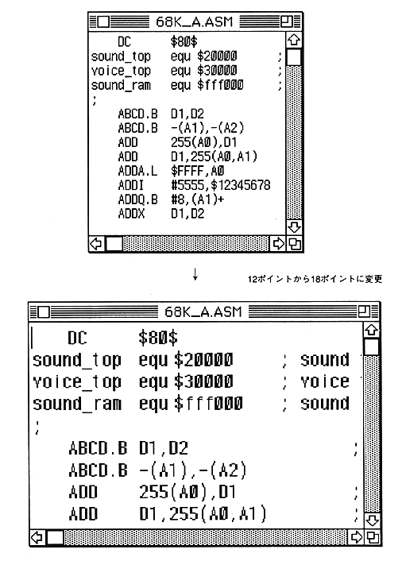

Return to previous page ｜ Return to menu ｜ Go to next page
-
Text size
- Changes the text size of the active text window.
It can be set to each point of 9,10,12,14,16,18,24. After the change, all characters in the screen will have the set character size.

Return to previous page ｜ Return to menu ｜ Go to next page